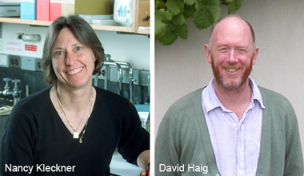
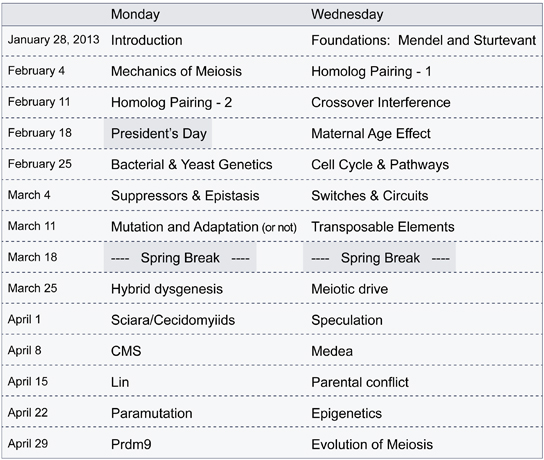

News Archives : 2012 : New Course: MCB 144 [Prof. Nancy Kleckner and Prof. David Haig]
by Jim Henle
December 12, 2012

Meeting Time: M., W., 12:00 pm – 1:30 pm
Location: Northwest Building 169 (Harvard Square-distal end of first floor hallway)
Prerequisites: Suitable for students in either the physical or biological sciences. Prior knowledge of genetics will be very helpful but will not be essential for the motivated student.
Genetics is an ancient discipline. In modern times, the term "genetics" has taken on an increasingly restricted meaning. In the extreme, genetics has become making a site-directed mutation in a protein and asking what happens to protein function.
In contrast, genetical thinking, and the types of experimental approaches that are motivated by such thinking, require imagination and creativity in trying to tease the organism or process into revealing its secrets. Correctly executed, this approach provides a powerful way of probing the underlying logic of a biological process as well as its mechanism.
This course is aimed at exposing the interested student to these ways of thinking. Necessarily, thinking must be applied to specific processes or questions. For this course, we will focus on the process of heredity, including genetic, epigenetic and evolutionary aspects, as manifested in organisms from bacteria to man. Thus: emphasis will be placed on how analytical genetic thinking and approaches can be applied to fundamental biological questions. Basic principles of genetic analysis, genetical thinking and experimental analysis and diverse individual topics of interest with regard to the mechanisms of, and evolutionary bases for, inheritance will be considered in bacteria, yeast, plants, invertebrates and animals (including human).
The course will combine lecture, reading of the primary literature and class discussion. Topics to be covered are listed below:

For additional questions, please e-mail
Download pdf of course description
View the course website for MCB 144